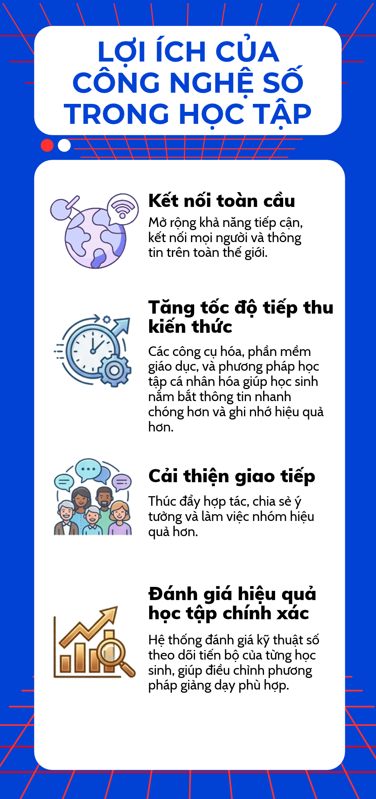

Lợi ích của
Công nghệ số
trong học tập
Video: Công nghệ số trong học tập
Mở video trên YouTube
Infographic được tạo bằng Canva AI, sử dụng cho mục đích học tập. Mã nguồn HTML được tạo và chỉnh sửa với sự hỗ trợ của GitHub Copilot. Video được liên kết từ YouTube và thuộc quyền sở hữu của tác giả/kênh đăng tải.